LCAT - Local Catalog
Powered by

| Project Links |
|---|
| Software GitHub Repository https://github.com/ds2-eu/localcatalog.git |
| Progress GitHub Project https://github.com/orgs/ds2-eu/projects/65 |
General Description
The Local Catalog (LCAT) provides a participant-facing catalogue control point for the DS2 ecosystem. It supports the lifecycle of data offers from local preparation and policy association through publication, discovery, access evaluation, contract negotiation and acquisition. The module acts as a user-oriented bridge between a participant, the DS2 Connector, the DS2 Trust and Identity environment, global catalogue services, policy tooling and the DS2 Repository Store.
LCAT enables a participant to stay in control of the data offers they expose and the data offers they consume. It gives providers a controlled way to prepare catalogue entries, associate policies, create data offers and publish those offers locally or to global catalogs or marketplaces It gives consumers a controlled way to subscribe to catalogues, discover offers, understand access requirements, initiate access requests and follow the acquisition of data offers. LCAT is therefore an In-Dataspace and Inter-Dataspace enablement module, especially important where participants need a local operational view of catalog publication and discovery across DS2 connectors and catalog brokers.
Architecture
The figure below represents the actors, internal structure, primary sub-components, primary DS2 module interfaces, and primary other interfaces of the module.
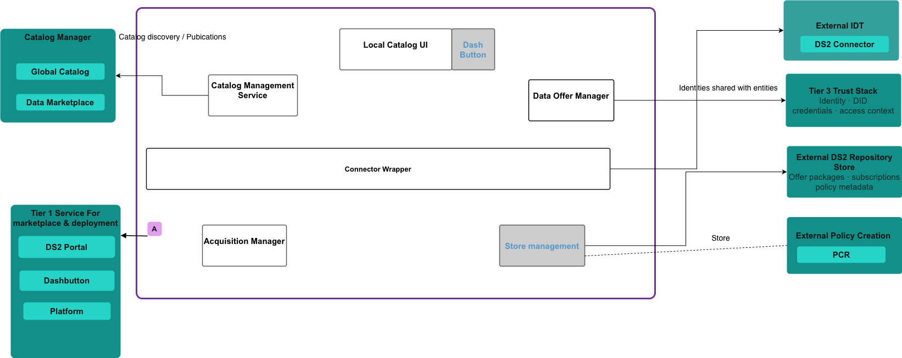
Component Definition
This module has the following subcomponents and other functions:
- • Local Catalog UI: This is the participant-facing cockpit of the module. It allows a participant user to operate provider, consumer and catalogue-management functions from a single local view. Its role is to expose high-level catalogue operations and not to expose raw connector operations as the primary user model.
- • Catalog Management Service: This manages catalog subscriptions, catalog endpoint validation, catalog request handling and global catalog publication. It allows a participant to identify which catalogs they trust or use, and which offers should be published beyond the local connector.
- • Data Offer Manager: This manages the data-offer lifecycle from the provider side. It brings together the data product, catalogue metadata, policy reference and offer definition so that a data product can become a discoverable DS2 data offer.
- • Acquisition Manager: This manages the consumer-side flow. It evaluates discovered offers against participant identity and credential context and allows the creation of Data Offer Package and Credentials for discoverable data offers
- • Connector wrapper: LCAT uses the participant's connector to create and retrieve catalogue information, manage assets and offers, run contract negotiation and follow transfer processes. The connector remains the dataspace protocol runtime.
- • Catalog Manager: LCAT can direct policy creation and review into PCR so that provider policy governance remains aligned with DS2 policy tooling.
Screenshots
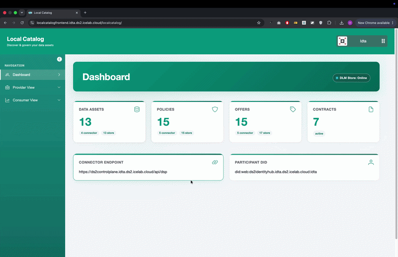
Commercial Information
Table with the organisation, license nature (Open Source, Commercial ... ) and the license. Replace with the values of your module.
| Organisation (s) | License Nature | License |
|---|---|---|
| ICE | Open Source | Apache 2.0 |
Top Features
- Provider View: The provider view allows the users to perform following tasks:
- Create the assets with the DS2 vocabulary
- Create and manage policies using the PCR module
- Create data offers by combining the assets and policies
- Publish the data offers to Local connector and multiple Global Catalogs and Market places
- Consumer View: Consumer view allows the users to perform the following tasks
- View list of all the acquired assets
- Subscribe to different provider local catalogs to see and acquire data offers
- Initiate a contract negotiation to the acquired data offers
How To Install
The module is installed as part of the IDT. The installation steps are provided if someone wants to run and test the system locally.
Requirements
Provision a Linux VM (Ubuntu 24.10) Resources:
Recommended: 4 cpu cores, 8 GB RAM and 50 GB disk capacity.
DS2 Installation
The first action needed to install the module is to acquire the module from the Marketplace at local catalog. Then from the Containerisation UI:
1. Refresh the Containerisation DS2 repository
 2. Navigate to available modules section
2. Navigate to available modules section
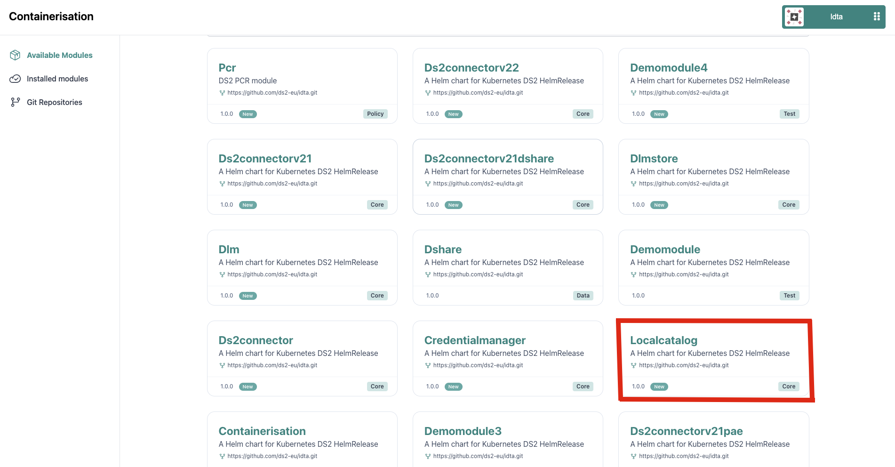
3. Click on the Localcatalog module 4. Click on Install button 5. Click on Next-Apps configurations button 6. Configure the required env variables * DOMAIN: domain of the connector you want to use * ORGANISATION_NAME: organisation name that you have registered * API_KEY: auth key for the connector * CATALOG_API_KEY: auth key for the catalog of the connector * REPOSITORY_API_KEY: auth key for DLM > keep API_KEY and CATALOG_API_KEY the same if you haven't changed anything in the connector. key for dlm store should remain the same too. 7. Click on Install Module button 8. Navigate to the Installed Modules 9. When localcatalog module is running, click on the Open Module button to navigate to the localcatalog module or navigate via Dash Button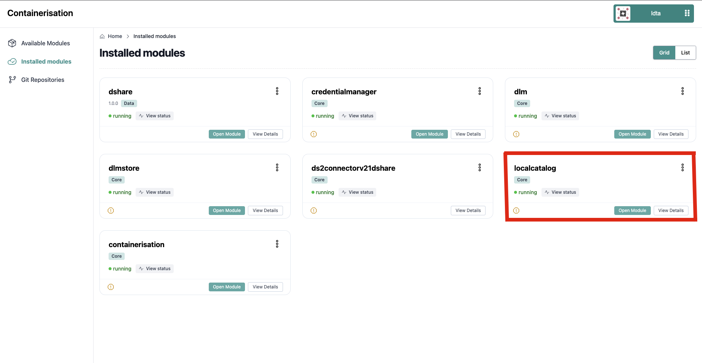
10. Enjoy Local Catalog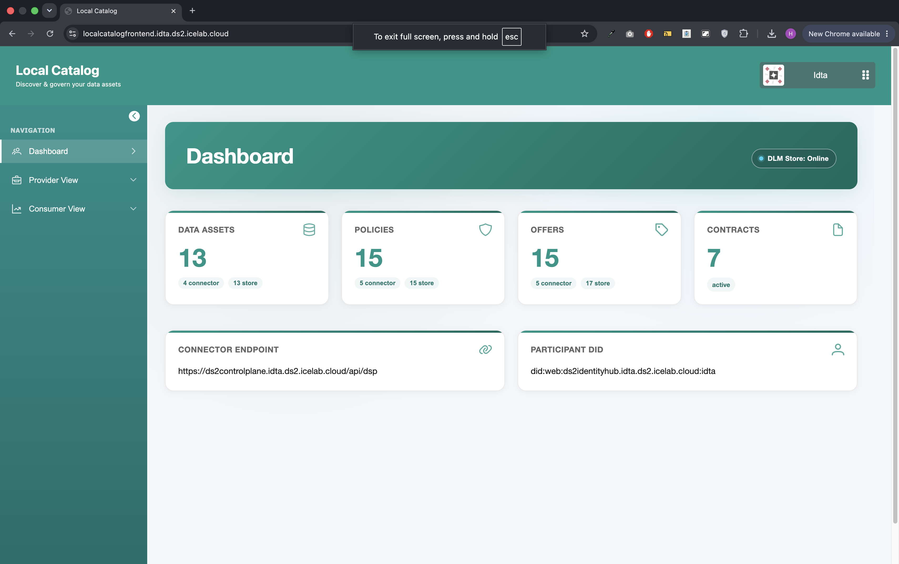
Standalone Installation
Summary of installation steps
- Clone the local catalog repo
- Tap into the localCatalog folder
- Run the bash di-build-test.sh script to create and run the docker files
Detailed steps
- Clone the code
- Navigate to the local catalog folder using following command
The module is composed of two parts: - frontend: a vue.js frontend application. - backend: A backend server to interact with the connector.
Installing and running Local Catalog Frontend
To install and run Local Catalog frontend, from the localCatalog folder you need to run the following command
bash di-build-test.sh
This will build all the docker images required to run the frontend and the backend and start the server which you will be able to see in the terminal
LCAT will be accessable from the link http://localhost:8091/localcatalog/
Environemnt variables for running the project locally
To run the project locate the docker-compose-test.yml file at the root folder
DOMAIN=idta.ds2.icelab.cloud
ORGANISATION_NAME=idta
API_KEY=c3VwZXItdXNlcg==.c3VwZXItc2VjcmV0LWtleQo=
CATALOG_API_KEY=password
REPOSITORY_API_KEY=C5CC3F19
These variables are setup to use one of the idt that is already in place, If you have your own connector, change the domain and orginisation name and make sure you have dlm connected with the idt.
How To Use
The local catalog will be used by either a provider or a consumer * Provider: A provider will use Local Catalog to create assets (data products), policies and data offers. The provider will also have the ability to push the data offers to different global catalogs or market places * Consumer: A consumer will use Local Catalog to see all the acquired assets, view policies and negotiate those policies using the PCR module.
Accessing the Local Catalog
- Navigate to the LCAT UI URL (e.g., http://localhost:8091/localcatalog/).
- This is a dashboard page that shows the overall information about the connector and dlm store. Each data product is first deployed to the dlm store as a draft and then published to the connector to view it publically. This dashboard shows quick view of things that are in the store and in the connector. It also displays some connector information that the participant is using for example the connector endpoint and the participant DID.
Note: If prompted to login please use the following credentials.
Accessing the Provider Hub
Provider Assets
- On the Provider View dropdown the first section is provider assets. This shows the list of all the assets that the provider has. Users can edit the existing assets or create a new one by clicking Add Assets button.
- This would bring up an asset form with all the asset vocabulary. The basic information and Data Address sections have the required fields. Most of the other fields are being prefilled from the dashbutton for example the creator information.
- The Create Asset button will create an asset and users will be able to see the new asset with red tag that says store. This means that this asset is still private and only lives in the DLM store.
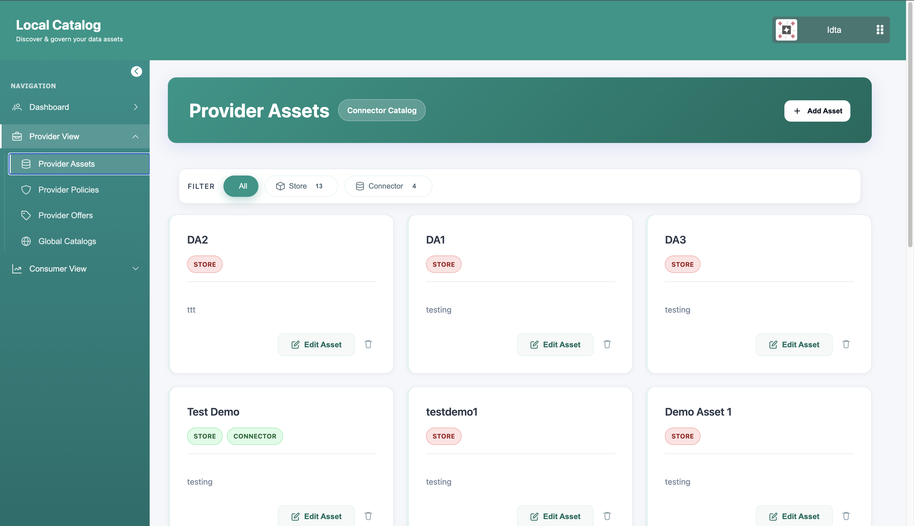
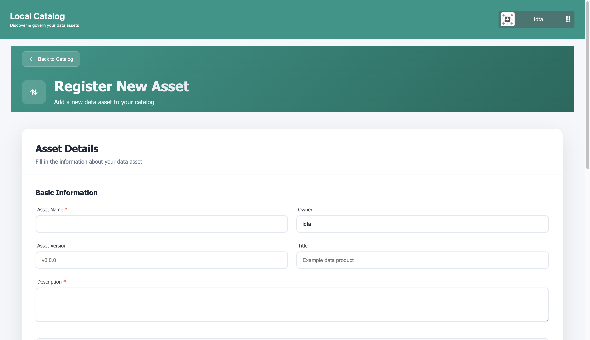
Provider Policies
- The second section in the provider view is provider policies. This shows all the policies a provider has created using PCR. Policy creation is done on the PCR side.
- If users click on view policy, It opens up an iframe of PCR displaying that policy.
- In the same way Add Policy button takes the users to the PCR.
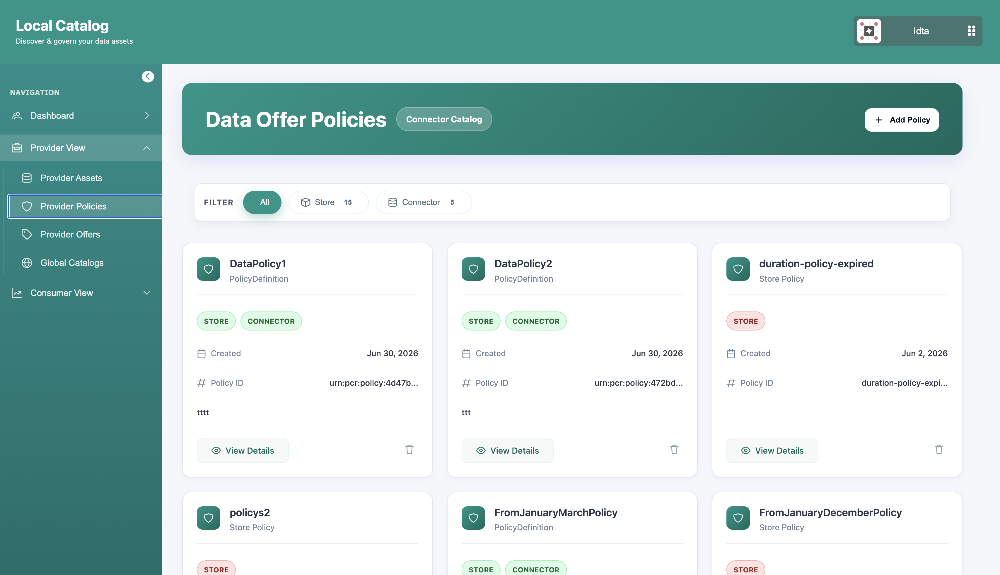
Provider Offers
- This section lets users create a data offer. Data Offer combining an asset with a policy.
- To create a data offer users will click the Add Offers button and from the dropdown select the asset and select the same policy in the contract policy and access policy. Contract policy is the policy that is being checked when a consumer negotiates a contract with the provider and access policy makes sure that a consumer has the right access to view the catalog of the provider.
- Finally, clicking on the publish button lets you publish that data offer to the connector. After doing that you will notice that asset, policy and data offer you created will have a green tag that says connector now.
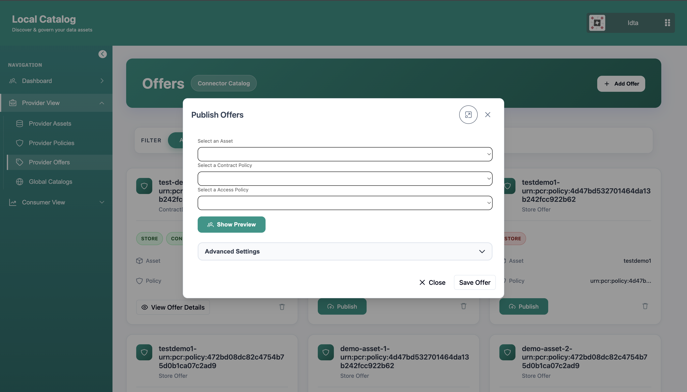
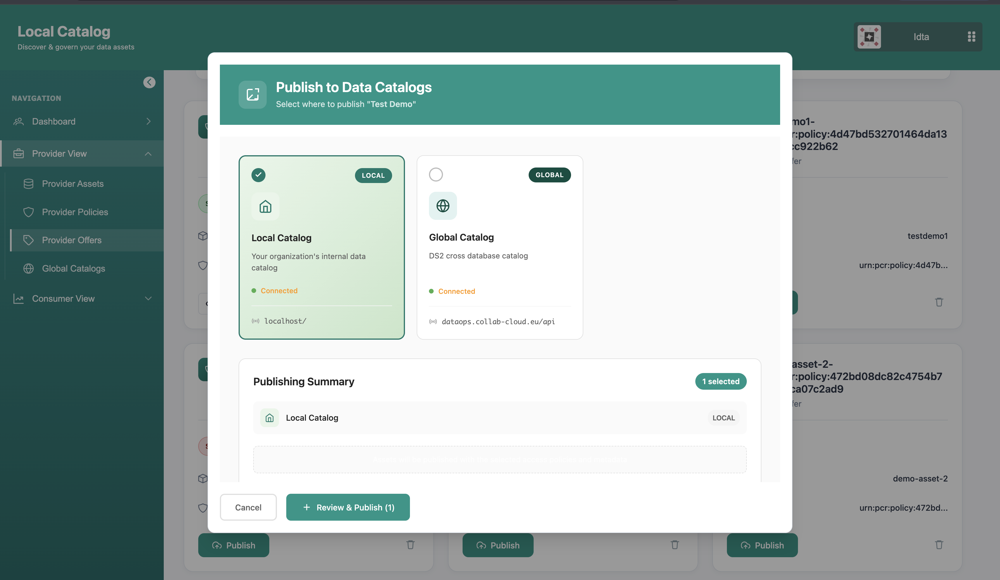
Global Catalog
- This section lets providers select different global catalogs.
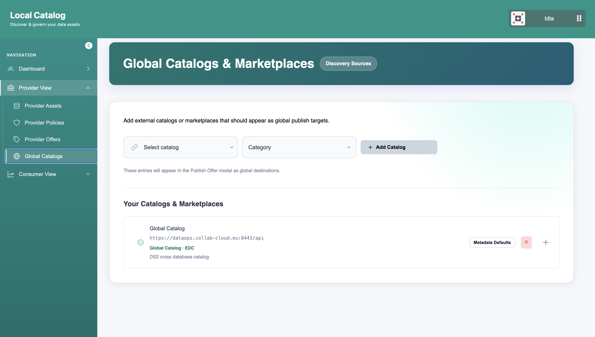
Accessing the Consumer Hub
Consumer View shows all the data offers that the consumer has acquired.
My Acquired Assets
- This let's consumers view all the acquired assets they have.
- Consumer can view different information about the data offer including policies that can be viewed in PCR.
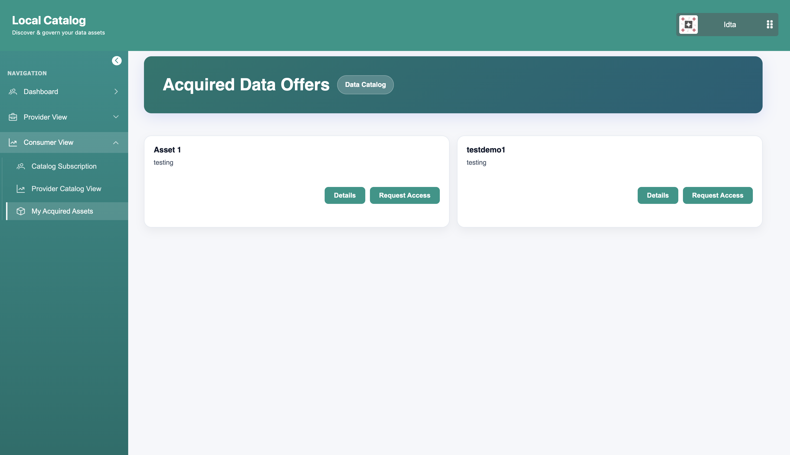
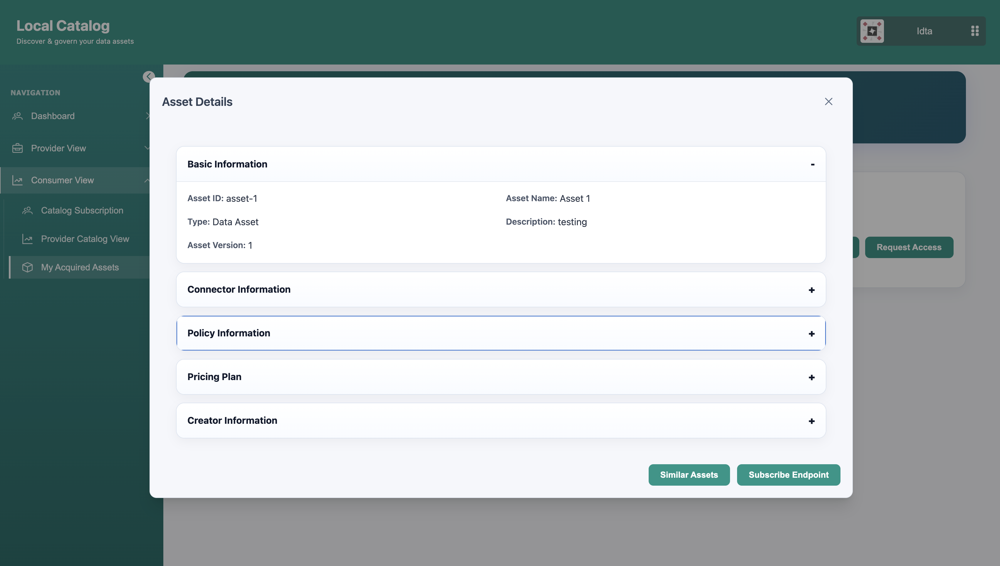
Catalog Subscription
- This page allows consumers to subscribe to provider's catalog endpoint. This way consumer can pull all the provider's private data offers and view them.
- Provider have an option to publish their data offers to global catalog for public view or keep them in their local connector.
- If the provider have some data offers in their local connector, the consumer can subscribe to their catalog and view those data offers even if they are not publically available in the global catalog and acquire them.
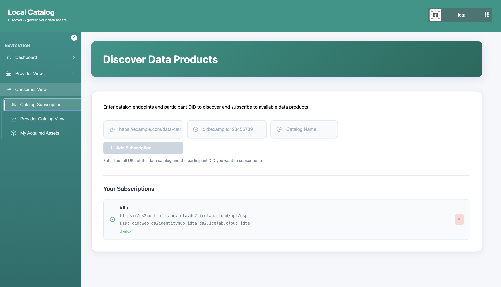
Provider Catalog View
- This section allows the consumers to view the catalogs of the provider endpoints they have subecribed to.
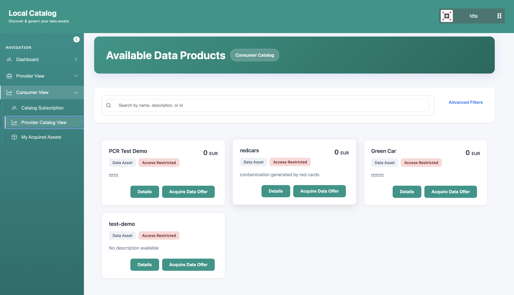
Other Information
A live version of LCAT using IDTA https://localcatalogfrontend.idta.ds2.icelab.cloud/localcatalog/
OpenAPI Specification
N/A
Additional Links
N/A